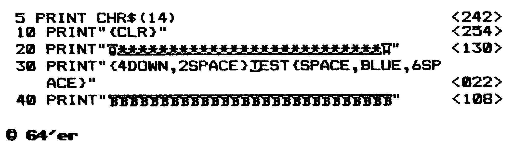
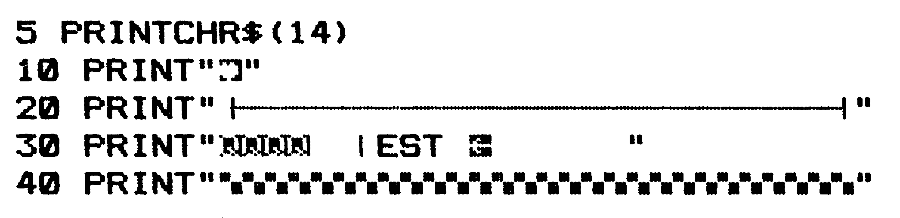

Hinweise zum Abtippen
Sie haben kein Problem mehr mit dem Abtippen von Basic-Programmen, wenn Sie die folgenden Hinweise zum Abtippen beachten.
Unsere Basic-Listings enthalten keine Steuerzeichen mehr. Diese werden ersetzt durch Klartext und stehen zwischen geschweiften Klammern. Deshalb sind weder die Klammern noch was dazwischen steht, abzutippen, sondern die in Tabelle 1 aufgeführten Tasten zu drücken. Auf Ihrem Bildschirm erhalten Sie dann wieder die entsprechenden Grafikzeichen (siehe Bild 1 und 2).


| {CTRL} | steht für Control-Taste, so bedeutet {CTRL-A}, daß Sie die Control-Taste und die Taste »A« drücken müssen. Im folgenden steht: |
| {DOWN} | Taste neben rechtem Shift, Cursor unten |
| {UP} | Shift-Taste & Taste neben rechtem Shift; Cursor hoch |
| {CLR} | Shift-Taste & 2. Taste ganz rechts oben |
| {INST} | Shift-Taste & Taste ganz rechts oben |
| {HOME} | 2. Taste von ganz rechts oben |
| {DEL} | Taste ganz rechts oben |
| {RIGHT} | Taste ganz rechts unten |
| {LEFT} | Shift-Taste & Taste unten rechts |
| {SPACE} | Leertaste, Hinweis: {13 SPACE} bedeutet 13mal die Leertaste drücken |
| {SHFT-SPCE} | Shift-Taste & Leertaste |
| {F1} | grauer Tastenblock rechts |
| {F3} | grauer Tastenblock rechts |
| {F5} | grauer Tastenblock rechts |
| {F7} | grauer Tastenblock rechts |
| {F2} | grauer Tastenblock rechts & Shift |
| {F4} | grauer Tastenblock rechts & Shift |
| {F6} | grauer Tastenblock rechts & Shift |
| {F8} | grauer Tastenblock rechts & Shift |
| {RETURN} | Shift-Taste & Return |
| {CTRL+I} | TAB-Taste |
| {CTRL+J} | Line Feed |
| {CTRL} | Control-Taste |
| {BLACK} | Control-Taste & 1 |
| {WHITE} | Control-Taste & 2 |
| {RED} | Control-Taste & 3 |
| {CYAN} | Control-Taste & 4 |
| {PURPLE} | Control-Taste & 5 |
| {GREEN} | Control-Taste & 6 |
| {BLUE} | Control-Taste & 7 |
| {YELLOW} | Control-Taste & 8 |
| {RVSON} | Control-Taste & 9 |
| {RVOFF} | Control-Taste & 0 |
| {ORANGE} | Commodore-Taste & 1 |
| {BROWN} | Commodore-Taste & 2 |
| {LIG.RED} | Commodore-Taste & 3 |
| {GREY 1} | Commodore-Taste & 4 |
| {GREY 2} | Commodore-Taste & 5 |
| {LIG.GREEN} | Commodore-Taste & 6 |
| {LIG.BLUE} | Commodore-Taste & 7 |
| {GREY 3} | Commodore-Taste & 8 |
Wenn Sie sich erst einmal an die in Klartext geschriebenen Steuerzeichen gewöhnt haben, werden Sie den Vorteil dieser Schreibweise erkennen. Der zu dem jeweiligen Steuerzeichen gehörende Klartext ist so verfaßt, daß Sie leicht die Taste beziehungsweise die Tastenkombination finden, die Sie drücken müssen.
Alle Grafikzeichen werden ebenfalls ersetzt durch unterstrichene oder überstrichene Großbuchstaben.
Unterstrichene Buchstaben bedeuten, daß Sie die <SHIFT>-Taste und den angegebenen Buchstaben drücken müssen, überstrichene jedoch die <CBM>-Taste mit dem Buchstaben.
Auch hier erhalten Sie am Bildschirm das entsprechende Grafikzeichen und nicht etwa das im Listing erkennbare Zeichen (siehe Bild 1 und 2).
Die Leerzeichen zwischen den einzelnen Basic-Befehlen können beim Abtippen entfallen. Dies ist besonders bei speicherkritischen Programmen wichtig.
Ebenso müssen Zeilen, die mehr als 80 Zeichen pro Zeile enthalten, mit den bekannten Abkürzungen für die Basic-Befehle (siehe auch das Handbuch zum Computer, im Anhang) eingegeben werden.
(gk)